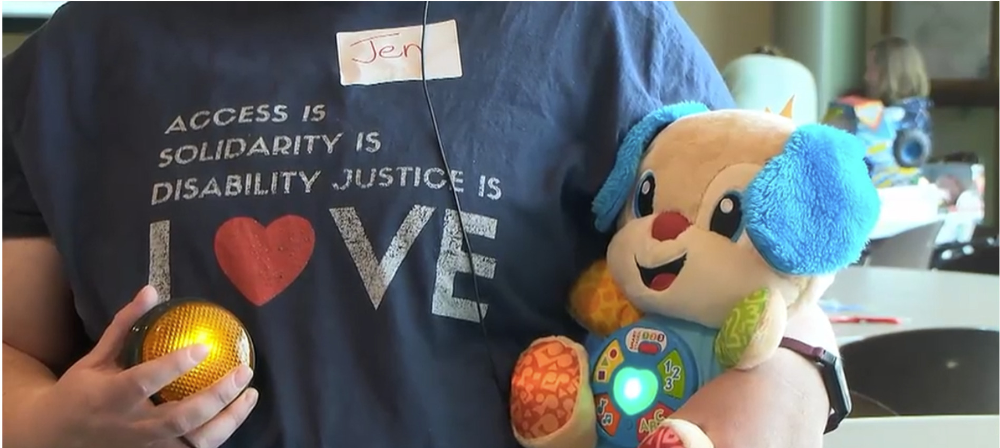

About Switch on the Joy
Switch on the Joy is a project by UICOMP Department of Pediatrics, Child Development Clinic. We collaborate with local groups to provide adapted toys for the community.
Why it matters
Play is more than entertainment, it is how children explore and express themselves. Every child should have the opportunity to experience the independence and joy play can bring. Creating more accessible experiences helps ensure that physical limitations that do not become barriers in childhood.
